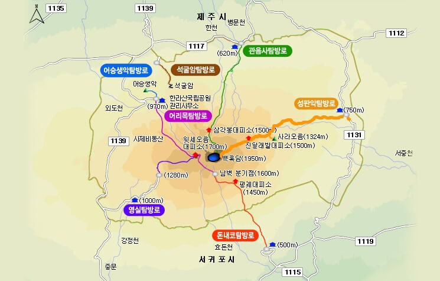
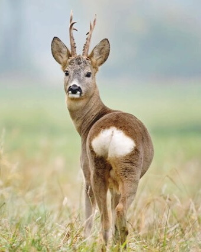

캐나다 밴프 Mount Richardson, 3086m

| 2018년 10월 08일 |
브릭 캠퍼스, 아침미소목장 |
| 10월 09일 | 다가미김밥, 성판악, 속밭대피소, 진달래밭대피소, 백록담, 성판악 |
| 10월 10일 | 메종글래드 정원, 노루생태관찰원, 부가네농장 황금향 |
국립공원, 천연기념물 182호,
유네스코 세계유산(제주 화산섬과 용암동굴)
한라산(漢한수(은하수)한拏붙잡을나山메산)은
은하수를 붙잡을 수 있을 정도로 높은 산이라는 뜻이며, 남한에서 가장 높은 산이다.

* 은하수를 표현하는 말
漢은 氵(물수)와 菫(진흙근)이 합쳐진 글자로 '진흙물'의 의미와 함께 은하수의 뜻도 있다. 은하수의 또 다른 표현으로 정지용의 시 향수에 나오는 '모래성'이 있다. 향수에서는 새벽이 오면서 별 빛이 사라지는 모습을 다음과 같이 표현했다.하늘에는 성근 별
알 수도 없는 모래성으로 발을 옮기고,
서리 까마귀 우지짖고 지나가는 초라한 지붕,
흐릿한 불빛에 돌아앉아 도란도란 거리는 곳.
그곳이 차마 꿈엔들 잊힐 리야.
별이 은하수로 발을 옮긴다는 것은, 은하수를 별의 고향으로 생각하여 별이 고향으로 돌아 간다는 의미도 있지 않을까 생각된다.
백록담
백록담은 한라산 꼭대기에 있는 화구호(화산의 분화구에 생긴 호수)이다. 둘레는 약 3km, 동서 길이는 약 500m이다.
白흰백鹿사슴록潭못담이라는
이름은 흰 사슴이 이곳 물을 마셨고, 신선들이 하늘에서 내려와 이 백록을 타고 놀았다는 전설에서 유래되었다.
노루
사슴과, 노루속, 시베리아노루종.제주도를 대표하는 야생 동물로 한라산에 많이 산다. 우리나라 본토에는 많지 않다. 참고로, 비슷한 종류인 사슴, 고라니는 제주도에 없다. 아침과 저녁에 주로 활동하며, 한라산 등산 시 해질녘에 쉽게 볼 수 있다(단, 해가 지면 길이 안 보여 매우 위험하다. 랜턴 또는 스마트폰 배터리를 충분히 준비해야 한다). 수컷만 뿔이 있으며 뿔의 모양을 보면 나이를 알 수 있다. 1년생은 한 줄기의 뿔만 있고, 1년마다 가지가 하나씩 늘어난다. 키는 1m 남짓으로 매우 귀여운 모습이다. 엉덩이에 흰 반점이 있으며, 이 모습은 노루궁뎅이버섯의 어원이 된다.

<-- 세 줄기의 뿔로 보아 3년생이다.

느낀 점, 배운 것
- Fish Creek Parking 이정표를 보고 우회전. 비포장길. 올라갈 때는 차로 이동
- No Entry 경고를 보고도 계속 직진
- Temple day lodge: 바람 불고 춥다. Hidden Lake 이정표 확인하고 산행 시작
- Larches가 멋있고, 왼쪽으로 멋진 모습 Mt ??가 있다. 처음에는 이 산이 Richardson 아닌가 생각
- Halfway Hut: Mt ?가 병풍처럼 앞을 가로막으며 사람을 압도한다.
- Hidden Lake 근처는 야생화가 많은 목초지다. 아름답다. 물을 담았고, 두 마리의 Pica를 보았다.
- Hidden Lake는 생각보다 크고 반대편 폭포 소리가 웅장하다. 이곳에서 정상의 돌탑이 보인다는 것을 내려올 때 알았다.
- 2570m 능선까지의 길이 만만치 않다. 마치 절벽처럼 90도의 경사로 느껴진다. 왼쪽 멀리 낮은 쪽으로 방향을 잡았으나 너무 멀리 돌아가는 것 같아서 중간쯤에서 생각을 바꿔 바로 치고 올라갔다. 힘들다.
- 능선에 올라서서 보니 반대편은 진짜 절벽이다. 좌우 모두 절벽의 용아릉 길이 생각났다.
- Temple Galcier, Victoria 호수가 보이기 시작한다. 멋있다~
| 장소 | 올라갈 때 | 하산 |
| Fish Creek Parking lot | 19:05 | |
| Temple Day Lodge | 10:10 | 18:30 |
| Hidden Lake | 11:00 | 17:30 (도착) 17:50 (출발) |
| 2570m 능선 | 12:30 | 16:30 |
| 안부(?) | 13:00 | 15:30 점심 |
| 정상 | 14:00 | 15:00 |